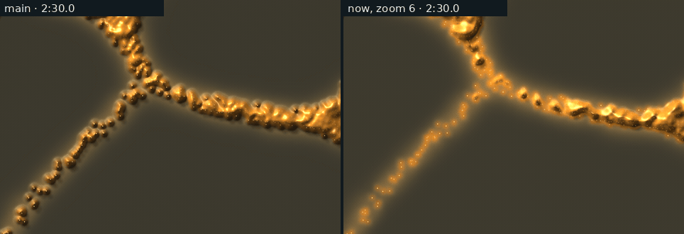
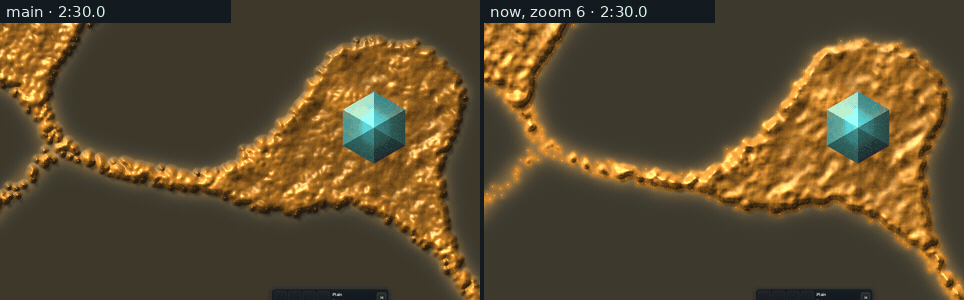
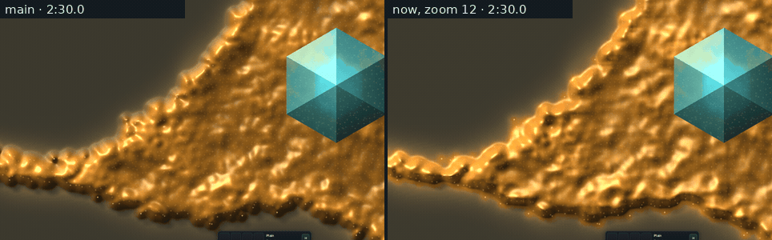
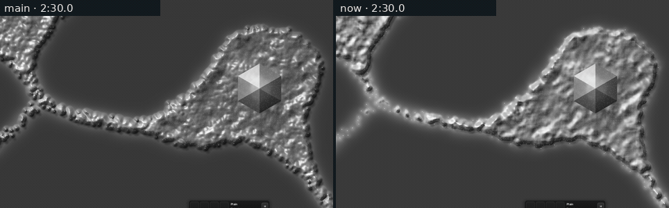

<title>Slime Sheen</title>
<meta name="claude:viewport-fit-sides" content="cover">
<link rel="preconnect" href="https://fonts.googleapis.com">
<link rel="stylesheet" href="https://fonts.googleapis.com/css2?family=Inter:wght@400;600&family=Space+Grotesk:wght@500;700&display=swap">
<style>
/* Slime sheen (2026-11-14, the graphics thread): the art director's notes
   on the slime material (frontier as bubble wrap, body as gold foil).
   Labelled, not blind: each film is main against this change on the same
   simulation, not a pick between looks. */
:root {
  --bg: #f3f5f6; --fg: #182024; --muted: #56646b; --line: #d5dde0;
  --panel: #ffffff; --amber: #a86a12; --red: #b2402a;
  --display: "Space Grotesk", "Segoe UI", system-ui, sans-serif;
  --body: "Inter", "Segoe UI", system-ui, sans-serif;
}
@media (prefers-color-scheme: dark) { :root:not([data-theme="light"]) {
  --bg: #0b1114; --fg: #e3eaec; --muted: #93a3aa; --line: #22303a;
  --panel: #111a1f; --amber: #e2a95a; --red: #f08a72; color-scheme: dark } }
:root[data-theme="dark"] {
  --bg: #0b1114; --fg: #e3eaec; --muted: #93a3aa; --line: #22303a;
  --panel: #111a1f; --amber: #e2a95a; --red: #f08a72; color-scheme: dark }
body { background: var(--bg); color: var(--fg); font-family: var(--body); line-height: 1.55;
  padding-left: max(16px, env(safe-area-inset-left, 0px)); padding-right: max(16px, env(safe-area-inset-right, 0px)); padding-block: 28px 48px; margin: 0; }
main { max-width: 1000px; margin: 0 auto; display: grid; gap: 36px; }
h1, h2 { font-family: var(--display); text-wrap: balance; margin: 0; }
h1 { font-size: 1.9rem; }
h2 { font-size: 1.2rem; }
p { margin: 0; max-width: 70ch; }
.lede { color: var(--muted); }
header, section { display: grid; gap: 12px; }
figure { margin: 0; display: grid; gap: 8px; min-width: 0; }
figure img { width: 100%; max-width: 100%; height: auto; border-radius: 4px; border: 1px solid var(--line); display: block; background: #111a1f; }
figcaption { font-size: 0.9rem; color: var(--muted); }
.tag { font-family: var(--display); font-size: 0.85rem; letter-spacing: 0.06em; text-transform: uppercase; color: var(--amber); }
.scroll { overflow-x: auto; min-width: 0; }
table { border-collapse: collapse; font-variant-numeric: tabular-nums; font-size: 0.9rem; }
th, td { text-align: right; padding: 5px 12px 5px 0; border-bottom: 1px solid var(--line); white-space: nowrap; }
th:first-child, td:first-child { text-align: left; }
th { font-family: var(--display); font-weight: 500; color: var(--muted); font-size: 0.78rem; letter-spacing: 0.04em; text-transform: uppercase; }
.note { color: var(--muted); font-size: 0.9rem; }
code { font-size: 0.9em; }
</style>

<main>
  <header>
    <span class="tag">After the slime material notes</span>
    <h1>A flat frontier and a broad wet sheen</h1>
    <p class="lede">Notes on the last pass: the thin frontier read as bubble wrap, and the thick body glittered like crumpled gold foil at zoom 6. Each film below is the same simulation drawn twice, main on the left and this change on the right, so the walkers match one for one. Frames are 0.1 game seconds apart, played at 10 a second.</p>
  </header>

  <section>
    <h2>Lone walkers are points of light, not domes</h2>
    <p>A walker on its own now has almost no height, so it casts no shadow and has no dark side. Its bright speck is what you see. Height builds up as walkers gather and is at full height in the body, so veins still stand up.</p>
    <figure>
      
      <figcaption>Zoom 6, the fork's thin arms, 2:30 to 2:33. Test: the darkest pixel within 1.5 cells of a lone walker is 60.5 against bare ground at 42.1. On main the dome's shaded side came down to 44.6 against 40.3.</figcaption>
    </figure>
  </section>

  <section>
    <h2>A broad sheen along the veins</h2>
    <p>The highlight follows the overall shape of the body instead of every walker-sized bump. It reads the height over a span of 9 screen pixels (1.5 cells at zoom 6 and 0.75 at zoom 12) with a softer falloff. The thickest parts are also a little less saturated, so soldiers and bullet light stay the brightest things on screen.</p>
    <figure>
      
      <figcaption>Zoom 6. Slime pixels at 2:31: fine grain (mean pixel Laplacian) 8.7 on main, 6.7 now. Highlight area (luminance over 215) 2,815 and 3,393 pixels. Median saturation 202 and 196.</figcaption>
    </figure>
    <figure>
      
      <figcaption>Zoom 12. Fine grain 3.9 and 3.6. Highlight area 5,137 and 10,801 pixels: fewer, larger sheens.</figcaption>
    </figure>
    <figure>
      
      <figcaption>The same film in grey. The thin film now adds a little of its own light, so it stays above the darker ground.</figcaption>
    </figure>
  </section>

  <section>
    <h2>Cost</h2>
    <div class="scroll">
      <table>
        <thead><tr><th>llvmpipe, 20 s farm hand, 1280 × 800</th><th>Run 1</th><th>Run 2</th></tr></thead>
        <tbody>
          <tr><td>Main, frame p50</td><td>59.2 ms</td><td>64.6 ms</td></tr>
          <tr><td>Now, frame p50</td><td>58.4 ms</td><td>60.6 ms</td></tr>
        </tbody>
      </table>
    </div>
    <p class="note">The runs alternated between builds, and the difference is within this machine's noise. 1070 timing waits until the PC is free. Films: <code>larder-world look=DIR hand=farm seed=1 map=fork centre=420,232,ZOOM</code>. The script and logs are in <code>Reports/slime-sheen-2026-11-14/raw/</code>.</p>
  </section>
</main>
